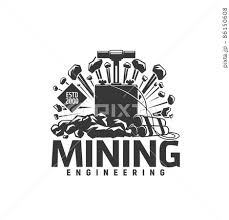
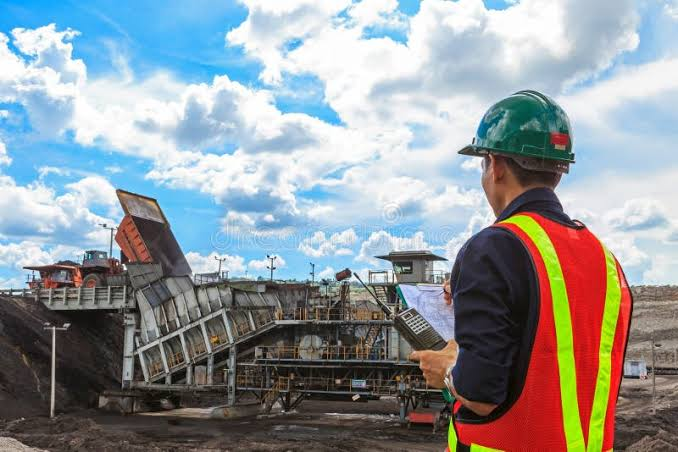
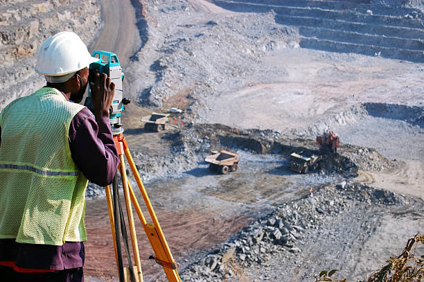

What is Mining Engineering?

Mining Engineering involves the discovery, evaluation, and extraction of minerals from the earth in a safe, efficient, and environmentally responsible way. It integrates geology, geotechnics, rock mechanics, ventilation, and mineral processing.
Key Areas

- Exploration & Resource Estimation – geological surveys, sampling, modeling.
- Mine Planning & Design – open-pit and underground layouts, scheduling.
- Rock Mechanics – slope stability, ground control, support systems.
- Ventilation & Safety – airflow, gas monitoring, emergency planning.
- Mineral Processing – crushing, grinding, separation, tailings.
- Environmental Management – reclamation, water management, ESG.
Applications
- Metals for electronics (Cu, Ni, Li, Co for batteries)
- Aggregates for construction (sand, gravel, limestone)
- Fuels and industrial minerals (coal, potash, phosphates)
- Rare earths for magnets, wind turbines, EV motors
Future of Mining Engineering

The sector is moving toward automation (autonomous haulage, drones), real-time sensing, digital twins, and low-impact operations with strict safety and reclamation standards.
Note: Responsible mining minimizes environmental impact through careful planning, water/energy efficiency, dust control, and land restoration.